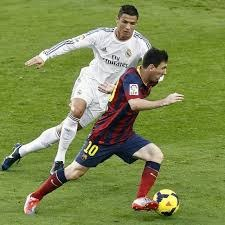
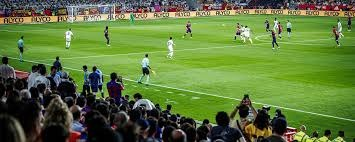

About Soccer
Soccer, known as football outside the United States, is a globally beloved sport played by two teams of eleven players. The objective is to score goals by getting the ball into the opposing team's net without using hands or arms, except by the goalkeeper. The simplicity of the game's rules and minimal equipment requirements have contributed to its widespread popularity.
History
 https://es.wikipedia.org/wiki/F%C3%BAtbolThe origins of soccer date back over two millennia to ancient civilizations. However, the modern version of the game began to take shape in England in the mid-19th century. In 1863, the Football Association was established in England, formalizing the rules and distinguishing soccer from rugby. This pivotal moment laid the foundation for the sport's global development.
Rules of the Game
Soccer is played on a rectangular field with a goal at each end. The game consists of two 45-minute halves, with a 15-minute halftime break. Players, except for goalkeepers, are prohibited from using their hands or arms to control the ball. The team that scores the most goals by the end of the match wins. If the score is tied, the game may end in a draw or proceed to extra time and possibly a penalty shootout, depending on the competition's rules.
Global Competitions
Soccer boasts numerous prestigious tournaments that captivate audiences worldwide. The FIFA World Cup, held every four years, is the most renowned, featuring national teams from across the globe. Other significant competitions include the UEFA Champions League, which crowns the top club team in Europe, and domestic leagues such as the English Premier League, Spain's La Liga, and Italy's Serie A.
Notable Players
Throughout its history, soccer has been graced by exceptional talent. Legends like Pelé, who led Brazil to three World Cup victories, and Diego Maradona, famed for his remarkable skill and the "Hand of God" goal, have left indelible marks on the sport. In recent times, players like Lionel Messi and Cristiano Ronaldo have set new standards, breaking numerous records and earning multiple awards.
